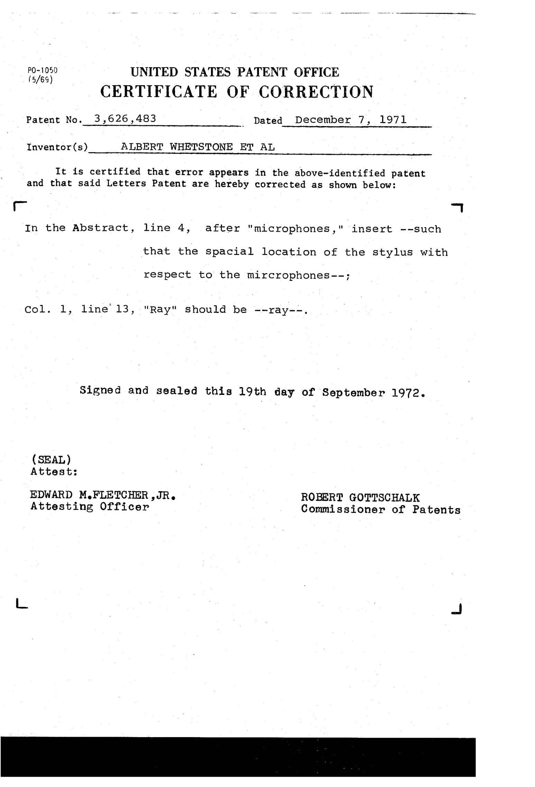

GRAF/PEN GrafBar Sonic Digitizer
The pen that made sparks — a digitizer whose stylus is a loudspeaker and whose tablet is just a table

Overview
The GRAF/PEN GrafBar is a sonic digitizer built by Science Accessories Corporation (SAC) of Southport, Connecticut. Its stylus tip fires a spark gap — in early models a literal electrical spark, in the 1989 Mark II a 70 kHz acoustic signal — several times per second, and two linear microphones in an "instrumentation bar" along the top edge time the arrival of each click. The controller triangulates the pen's X/Y position from the speed of sound and streams coordinates out a serial port. The drawing surface itself is completely passive: no grid, no wires, no embedded sensors.
Because the surface is acoustically transparent, users could lay a real drawing or blueprint on an ordinary table and digitize directly from it. AutoCAD 1.x and 2.x supported the GP-7 (18×24-inch active area) and the GP-8 (60×72-inch, for blueprint- and map-scale work), and a three-dimensional GP-8-3D variant added microphones to track the pen's height above the surface — volumetric input as early as 1984.
Deep dive
The lineage begins with SAC's Spark Pen patent, US 3,626,483 (Whetstone, Fine, Banks, and Philips; filed July 16, 1969, granted December 7, 1971): a ball-point pen whose conductive cartridge carries high voltage to a spark gap, producing a "continuous series of fast rise time shock energy sound waves" picked up by "coordinately spaced microphones coupled to a data digitizer." The GRAF/PEN line followed, and the GrafBar GP-7 was reviewed in Microcomputing magazine in February 1984 for the Apple II and IBM PC.
John Walker, Autodesk's co-founder, remembered the early sonic pens in The Autodesk File: the sparks "created ozone, which contributed to the electric feeling of pioneering desktop CAD," and the pen was "also handy for chasing away pesky cats." A digitizer that doubles as a cat-deterrent is the kind of detail this museum exists to keep.
Acoustic tablets solved a real economic problem: scaling a digitizer to full-size drawings by adding microphones rather than a grid of wires. The tradeoff was environmental — room noise, drafts, and air-temperature gradients could corrupt the time-of-flight measurements. The paradigm faded by the early 1990s as electromagnetic tablets became cheaper and more robust, a clean 1976–1992 arc.
The GrafBar is the museum's only acoustic time-of-flight input device. Summagraphics' Bit Pad uses a magnetostrictive grid; the Pencept PenPad and Linus Write-Top are electromagnetic; the Polhemus Isotrak is magnetic; the VPL DataGlove uses ultrasonic bend sensing. None of them make the pen itself a loudspeaker and the drawing surface a passive acoustic window.
Team & pioneers
- Science Accessories Corporation. Manufacturer of the GRAF/PEN line, Southport, Connecticut.
- Albert Whetstone, Samuel Fine, William Banks, Stanley Philips. Inventors of the Spark Pen patent US 3,626,483 (1971).
- John Walker. Autodesk co-founder; documented the GrafBar in The Autodesk File.
Media

Sources
- Wikipedia — Acoustic tablet
- The Autodesk File (John Walker) — GrafBar footnote
- US Patent 3,626,483 — Spark Pen (Science Accessories Corp., 1971)
- SAC GP-8-3D Grafbar Technical Bulletin (1984-12-15), via Ward pen-computing bibliography
- Jean Renard Ward — annotated pen computing bibliography (SAC Grafbar Mark II, 70 kHz)
- AtariAge — GrafBar digitizer thread